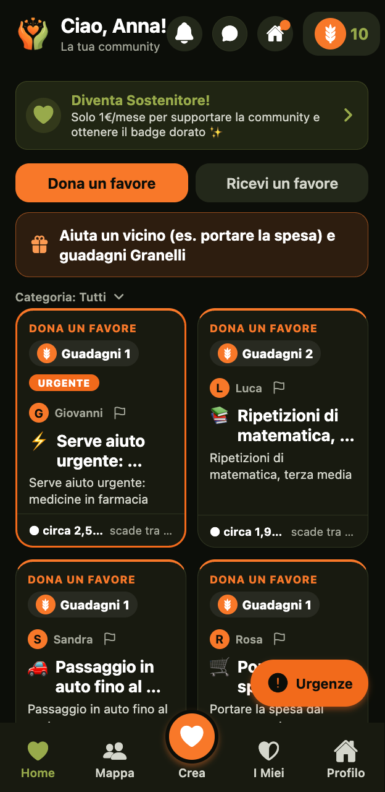
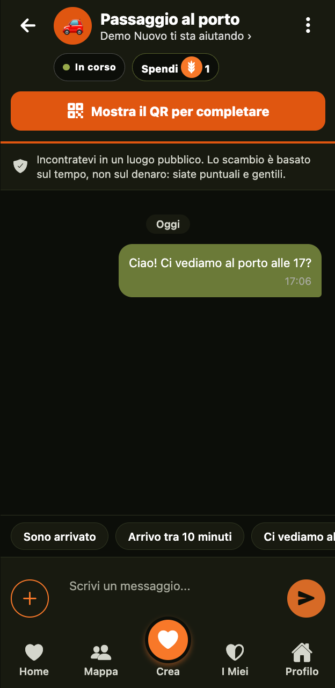
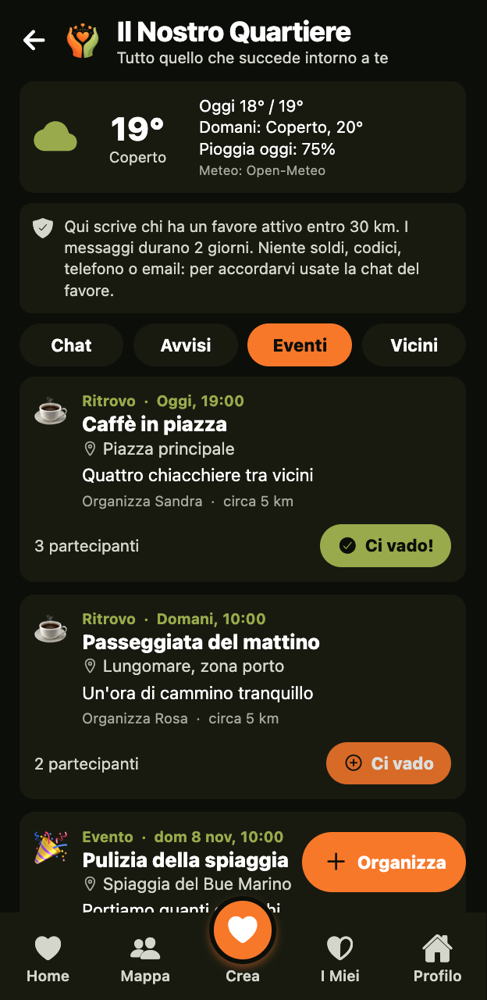
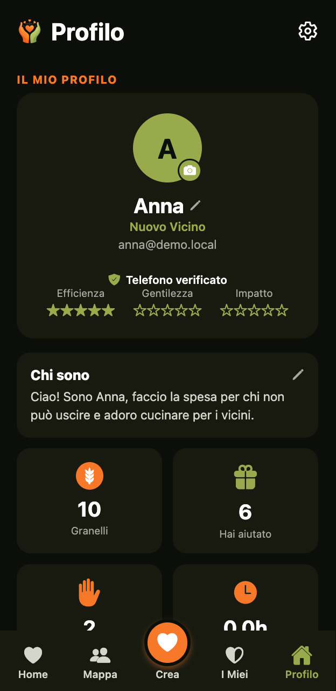

Nata a Petrosino, per ogni paese e quartiere. Dona un favore, ricevine uno, guadagna e spendi Granelli: niente soldi, solo vicini che si aiutano davvero.




Come funziona la moneta
Il Granello non è denaro: serve solo a tenere lo scambio equo tra vicini.
Le funzionalità
Dall'onboarding alla mappa dei favori vicini, ogni dettaglio è pensato per rendere l'aiuto reciproco naturale e gratificante.
Scegli tra «Dona un favore» e «Ricevi un favore» vicino a te, sulla mappa e in elenco. Filtra per categoria. Le posizioni sono approssimative, a tutela della tua privacy.
GeolocalizzazioneCoordinati direttamente con chi dona o riceve un favore. Nessun numero di telefono da condividere, tutto sicuro dentro l'app.
Messaggistica sicuraGuadagna Granelli ogni volta che completi un favore e usali per ricevere aiuto a tua volta. Un'economia circolare basata sulla reciprocità reale.
Valuta comunitariaIn caso di necessità urgente, pubblica una richiesta di emergenza: viene inviata ai vicini più affidabili e ben valutati, che ricevono una notifica.
Vicini affidabiliLa chat di chi ha un favore attivo entro 30 km, gli avvisi del quartiere (lavori, smarrito e trovato), gli eventi e i ritrovi con il luogo scelto entro 20 km, le presentazioni dei nuovi vicini e il meteo della zona. I messaggi durano 2 giorni, niente numeri di telefono o link.
Chat e avvisiNiente favori a distanza: ci si incontra e il favore si completa solo con il codice QR, mostrato da chi riceve e scansionato da chi aiuta. Verifica del telefono all'iscrizione, filtro anti-truffa e tasto «Non mi sento al sicuro» sempre a portata di mano.
Fiducia e sicurezzaNovità dell'app
Le ultime migliorie, pensate guardando come i vicini usano davvero Scambio Favori.
Ogni favore mostra solo l'essenziale: tipo, Granelli, titolo e distanza. Con tanti favori l'elenco si divide in Urgenti (poche, con un link a tutte), Vicini a te, In linea con le tue competenze e Altri. Le richieste uguali diventano una riga sola e si cerca per parola.
Meno confusionePer chi arriva: quattro passi (primo favore, presentazione al quartiere, aiutare un vicino, invitare qualcuno) e una barra che mostra quanto manca per sbloccare tutto.
Primi passiUna sola voce quando un favore si conclude, messaggi dello stesso favore raggruppati, avvisi sulle tue competenze in un'unica notifica e un promemoria se un favore resta fermo. Niente più campanella piena.
Meno rumoreNelle Impostazioni scegli tra Normale, Grande e Molto grande: tutta l'app si legge meglio, anche per chi vede poco o non ama i caratteri piccoli.
AccessibilitàUn solo pulsante «+» per mandare il punto d'incontro o la tua posizione, mostrata in una scheda pulita che si apre nella mappa.
Incontrarsi è facileRingrazia con una frase pronta, in un tocco. E dopo tre favori completati puoi garantire per un vicino che conosci di persona: la fiducia cresce insieme alla comunità.
FiduciaNon si promette più di quello che si ha: i Granelli già impegnati in favori in corso si sottraggono dal saldo, e quando crei una richiesta vedi quanti ne hai liberi. Così chi aiuta è sicuro di essere ripagato; e prima di accettare un'offerta vedi quanti Granelli ti servono e quanti ne hai liberi. Se una tua richiesta resta senza risposta e blocca i Granelli, un promemoria ti aiuta a modificarla o annullarla.
Scambio equoFino a 5 favori in attesa e fino a 5 favori a settimana con la stessa persona. I favori durano da 1 a 5 giorni e, quando scadono, i Granelli che tenevano fermi tornano liberi. Un favore accettato e mai concluso torna disponibile dopo 5 giorni, con un promemoria dopo 24 ore.
Più spazio per cominciareCome funziona
Crea il tuo profilo in pochi secondi. Aggiungi una foto, la tua zona e cosa sai fare bene.
Scegli «Dona un favore» o «Ricevi un favore» vicino a te, oppure pubblica il tuo. Dalla spesa al giardinaggio: c'è di tutto.
Chatta con il vicino, accordati sui dettagli e all'incontro chi riceve mostra il codice QR e chi aiuta lo scansiona: il favore si completa solo così. Poi la recensione.
Ricevi i tuoi Granelli e usali per il prossimo favore. Il ciclo virtuoso della comunità.
I Granelli
I Granelli non si comprano con soldi reali — si guadagnano aiutando. Ogni favore completato ti dà Granelli che puoi usare per ricevere aiuto alla comunità.
Un sistema equo e trasparente che premia chi contribuisce e garantisce che tutti abbiano accesso all'aiuto quando ne hanno bisogno.
✨ Più dai, più puoi ricevere.
Con la modalità emergenza, puoi pubblicare una richiesta urgente in secondi e ricevere risposta immediata da chi è vicino e disponibile. La rete si attiva quando ne hai bisogno davvero.
Unisciti a Scambio Favori e scopri quanto è bello avere una comunità vera intorno a te. Gratuito, semplice, autentico.
🌾 Fai il testerScambio Favori è un'app gratuita che mette in contatto le persone dello stesso quartiere: puoi chiedere un aiuto o offrire il tuo tempo per piccoli favori come fare la spesa, portare a spasso il cane, dare ripetizioni o annaffiare le piante.
I Granelli sono la valuta della comunità: 1 ora del tuo aiuto vale 1 Granello. Li guadagni aiutando un vicino e li spendi quando hai bisogno tu. Non sono denaro: servono a tenere lo scambio equo tra tutti.
Sì. Scaricare e usare Scambio Favori non costa nulla e non ci sono abbonamenti obbligatori. Chi vuole può sostenere il progetto con un contributo volontario di 1 € al mese, che si disdice in qualsiasi momento dall'app.
Pubblichi un favore da donare o da ricevere, un vicino lo accetta e vi mettete d'accordo. A favore concluso si conferma con un codice QR, i Granelli passano da chi riceve l'aiuto a chi lo dà e ci si lascia una recensione.
I favori si fanno sempre di persona e si completano solo con il codice QR, mostrato da chi riceve e scansionato da chi aiuta. Per iscriversi servono la data di nascita (solo maggiorenni) e la verifica del telefono con un SMS. I nuovi utenti hanno limiti, i messaggi sospetti (richieste di denaro, codici, inviti a continuare su WhatsApp) vengono bloccati, c'è il tasto «Non mi sento al sicuro» e si può segnalare o bloccare chiunque. I dati personali vengono trattati nel rispetto del GDPR.
L'app è disponibile in italiano e in inglese: puoi cambiare lingua in qualsiasi momento da Profilo → Impostazioni.
L'app è in pubblicazione su Google Play per Android. Torna su questa pagina per il link ufficiale appena disponibile.
Sì, anzi: è nata a Petrosino. I favori si cercano entro pochi chilometri e basta un vicino per iniziare. Più persone si iscrivono nel tuo paese, più la rete diventa utile.
Dall'app, in Profilo → Sostieni, tocca «Disdici». Il contributo è volontario (1 € al mese) e resta attivo fino alla fine del periodo già pagato. Puoi anche scrivere a infoapp@scambiofavori.it.
Il favore non si completa e nessun Granello passa di mano, perché serve il codice QR scambiato di persona. Puoi segnalare chi non si è presentato e il favore torna disponibile per altri vicini.
Sì. In Impostazioni → Dimensione del testo scegli Normale, Grande o Molto grande: la scelta vale per tutta l'app e resta salvata.
Se nessuno lo accetta, dopo 24 ore ricevi un promemoria (una sola notifica per tutte le richieste ferme, perché tengono bloccati i tuoi Granelli) e un altro prima della scadenza: puoi modificarlo, annullarlo o pubblicarlo di nuovo. Se non fai nulla, scade da solo dopo i giorni che hai scelto (da 1 a 5) e i Granelli che teneva fermi tornano subito liberi. Se qualcuno lo accetta ma non lo conclude, dopo 24 ore arriva un promemoria a entrambi e dopo 5 giorni il favore torna disponibile.
No. Quando pubblichi una richiesta, i Granelli già impegnati in altri favori in corso non contano come tuoi: il saldo libero è quello che resta. In Crea vedi sempre quanti ne hai liberi, e se non bastano l'app ti suggerisce di aiutare un vicino con «Dona un favore» per guadagnarne.
Fino a 2 urgenze senza risposta alla volta: se tutto è urgente, niente lo è più per chi guarda. Quando qualcuno risponde si libera il posto, e per il resto puoi pubblicare un favore normale. Nella Home vedi sempre poche urgenze, con un link per vederle tutte.
Il Fondo si apre dopo 5 volte che aiuti un vicino: è il badge «Eroe di Quartiere», e ricevere aiuto non basta. Nel tuo Profilo trovi una barra che mostra quanti aiuti ti mancano, così sai quando potrai donare Granelli a chi ne ha bisogno.